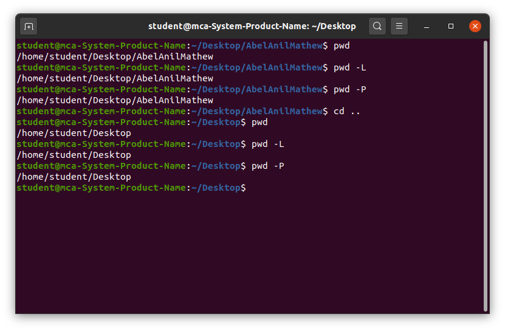
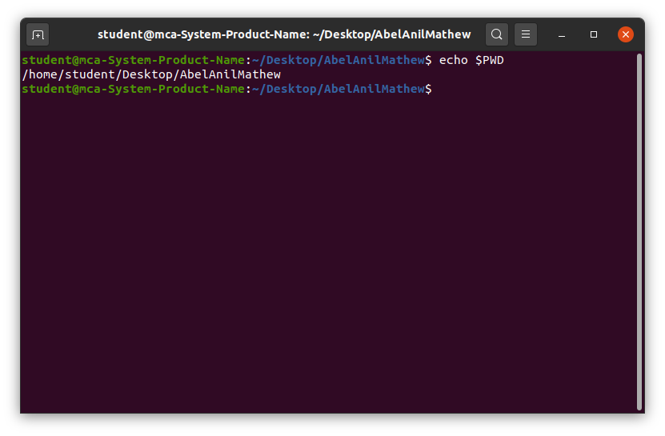

The ‘pwd,’ which stands for “print working directory.” It prints the path of the working directory, starting from the root. pwd is a shell built-in command (pwd) or an actual binary (/bin/pwd).
- It helps users identify their current location in the directory structure.
- It ensures clarity during file management and navigation, especially in complex directory hierarchies.
pwd [OPTIONS]This command doesn’t have any arguments or options, but it can accept flags for specific behavior.
- The “-L” flag resolves symbolic links and prints the path of the target directory.
- The default behavior of the shell built-in “pwd” is equivalent to using “pwd -L”.
- The “-P” flag displays the actual path without resolving symbolic links.
- The default behavior of the binary “/bin/pwd” is the same as using “pwd -P”.
pwd -L: Prints the symbolic path.
pwd -P: Prints the actual path.To print the current working directory, simply enter:
The output will be the absolute path of your current location in the file system.
The default behavior of Built-in pwd is the same as pwd -L. Using “pwd -L” to obtain the symbolic path of a directory containing a symbolic link.
The default behavior of /bin/pwd is the same as pwd -P. Utilizing “pwd -P” to display the actual path, ignoring symbolic links.
The $PWD environment variable is a dynamic variable that stores the path of the current working directory. It holds the same value as ‘pwd -L’ – representing the symbolic path.
Executing this command prints the symbolic path stored in the $PWD environment variable.
The pwd command is an essential tool in Linux that helps users identify their current working directory in the file system. It is simple yet powerful, ensuring that users always know their location within the directory structure. This command is particularly useful for navigating complex systems and scripting tasks where directory context is critical. Mastering the pwd command, along with its options, lays the foundation for efficient system navigation and management in Linux environments.
"The purpose of education is to replace an empty mind with an open one."